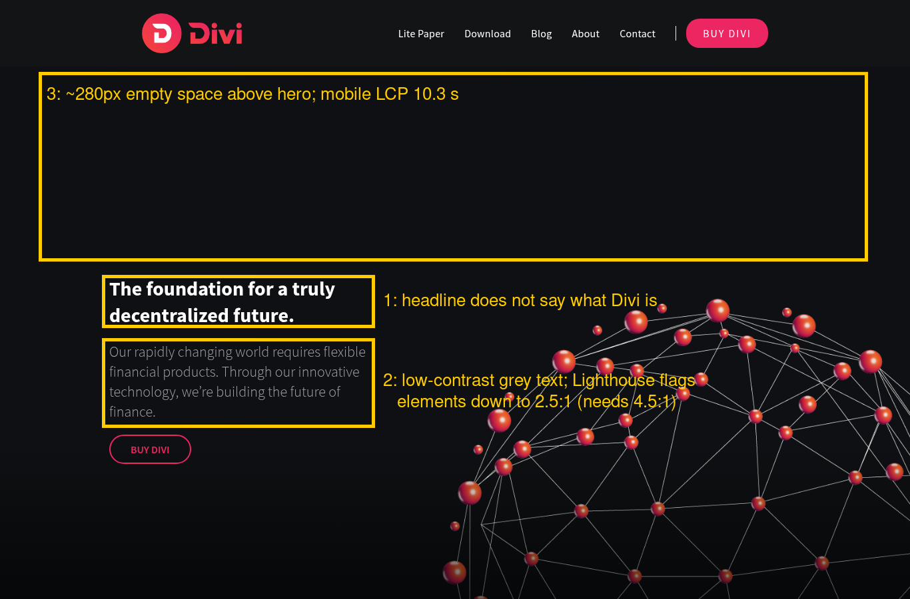

← Black Relay Web3 Site Audits
Site: diviproject.org · Checked 15 Oct 2026 · Unsolicited public sample, made only from what any visitor can see (public pages and response headers). Not affiliated with or endorsed by Divi Project. Results reflect the site on that date.

Lighthouse measured Largest Contentful Paint at over 10 s across two runs (10.3 s and 10.9 s) (good is under 2.5 s). The homepage downloads about 4.7 MB, and around 283 KB of JavaScript is loaded but not used.
Fix: Compress and resize the hero/background images (WebP/AVIF), lazy-load below-the-fold media, and drop unused scripts.
Search results and link previews show "Home" with no description, so a search for the project gives people no reason to click.
Fix: Use a title like "Divi – [what it does] | DIVI coin" and a 150-character meta description.
"The foundation for a truly decentralized future" could describe any crypto project. A first-time visitor can't tell above the fold whether this is a wallet, a chain, or a coin (screenshot item 1).
Fix: Lead with one concrete sentence on what the product does and who it's for, then the Buy CTA.
Lighthouse flags several elements below the 4.5:1 contrast minimum, the worst at 2.5:1 (#54565a on near-black). It's hard to read on phones outdoors (screenshot item 2).
Fix: Lighten body text to about #b8bcc6 or brighter.
The Telegram, Discord and Twitter icon links have no text label, so screen readers just announce "link". Unlabelled links also give search engines and AI crawlers less context.
Fix: Add aria-label="Divi on Telegram" (and so on) to each icon link.
/sitemap.xml returns 404, robots.txt is empty, and the page has no canonical link and no lang attribute on <html>.
Fix: Turn on Webflow's auto-generated sitemap, reference it in robots.txt, and set the site language and canonical URL in the SEO settings.
Good: HSTS, X-Frame-Options and a frame-ancestors CSP are set. Missing: X-Content-Type-Options, Referrer-Policy and Permissions-Policy.
Fix: Add them at the CDN/proxy layer: nosniff, strict-origin-when-cross-origin, and a minimal Permissions-Policy.
Want the same for your project? Email esa@mail.grokbot.com for a free 3-finding preview. Email only, we never DM.